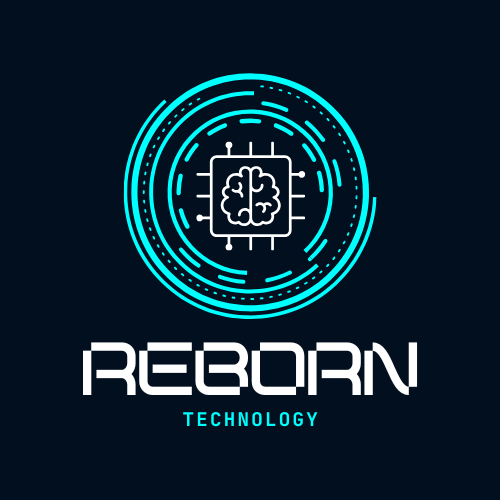

REBORN TECHNOLOGY
¿PARA QUE HACEMOS UN ANÁLISIS DE RIESGOS?
-
Un análisis de riesgos nace de un PDS (Plan Director de Seguridad) que simplificadamente es un conjunto de proyectos que buscan mejorar la seguridad de nuestra empresa, detectando vulnerabilidades, amenazas y actuando contra los riesgos.
ANÁLISIS DE RIESGOS
| Amenazas | Características de las amenazas | Activos | Salvaguardas | Lógio/Físico | Activo/Pasivo | Intencional/Accidental |
|---|---|---|---|---|---|
| Malware | Lógico | Activo | Intencional | Portátiles, Servidor, Ordenadres | Mantener el antivirus actalizado |
| Corte de suministo eléctrico | Físico | Pasivo | Accidental | Módem, Router, Servidor, Switch, Ordenadores, Racks, Personas | Sistema eléctrico |
| Hackeo de contraseñas | Lógico | Activo | Intencional | PC, Router, Servidor | Contraseñas fuertes y autenticación en dos pasos |
| Sobrecalentamiento de los equipos | Físico | Pasivo | Accidental | Servidor, Switch, Rack, Ordenadores | Refrigeración |
| Fallos en los componentes hardware del equipo | Físico | Pasivo | Accidental | Módem, Router, Servidor, Switch, Ordenadores, Rack | Recambios de hardware |
| Catástrofes naturales | Físico | Pasivo | Accidental | Afecta a todos nuestros activos | No hay nada |
| Errores Humanos | Lógico | Activo | Accidental | PC, Servidores, Personas | No hay nada |
| Phishing | Lógico | Activo | Accidental | PC, Personas | Firewall, Antivirus |
| Ataque denegación de servicio (DoS) | Lógico | Activo | Intencional | Servidores, Redes, Routers | Firewall, Antivirus |
| Ransomware | Lógico | Activo | Intencional | PC, Servidores | Firewall, Antivirus |
| Ingeniería Social | Lógico | Activo | Intencional | Personas, PC | Firewall, Antivirus |
GRÁFICO DE ANÁLISIS DE RIESGO

EVALUACIÓN DE RIESGOS

CONCLUSIÓN ANÁLISIS DE RIESGO
Para concluir el análisis de riesgo, nosotros hemos decidido tratar las que tengan más de riesgo 7 o lo que es lo mismo riesgo muy alto. En este caso trataremos las amenazas de ingeniería social y hackeo de contraseñas.SALVAGUARDAS
Como salvaguardas después de nuestro análisis de riesgos, haremos que nuestros trabajadores tengan que cambiar su contraseña una vez a la semana y pondremos patrones de como poner sus contraseñas (Mayúscculas, minúsculas, numeros y carácteres especiales)
Como salvaguardas de la ingeniería social daremos capacitaciones fomentando la identificación de correos o mensajes maliciosos. aparte de ello también activaremos la autenticación miltifactor o en dos pasos, lo que obligará a los usuarios a verificarse de cualquier otra forma que no solo sea con una de sus contraseñas.
Tambén vamos a añadir 4 SAIs ya que nos preocupa el corte eléctrico
SAI 1SAI 2
SAI 3
SAI 4